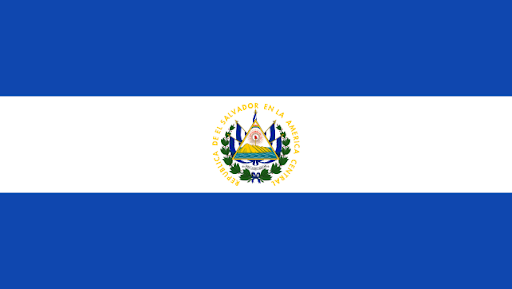

El salvador

El Salvador es una pequeña nación de América Central. Es conocida por sus playas en el océano Pacífico, los sitios de surf y el paisaje montañoso. Su Ruta de las Flores es un camino serpenteante que pasa por plantaciones de café, bosques tropicales con cascadas y ciudades como Juayúa, con sus festivales gastronómicos cada fin de semana, junto con Ataco, donde hay alegres murales. La capital, San Salvador, con volcanes como un espectacular telón de fondo, tiene varios museos
y el Teatro Nacional. El actual territorio de El Salvador comprende lo que antes fuera la Alcaldía Mayor de Sonsonate y lo que fue la Intendencia de San Salvador que conformó la mayor parte del territorio. Ambas provincias adquirieron su independencia de España en 1821 junto a la Capitanía General de Guatemala y en 1824 se unieron para formar el «Estado del Salvador»,12 como parte de la República Federal de Centro América. En la época precolombina, existía un importante núcleo indígena conocido como el Señorío de Cuzcatlán (que en lengua náhuat significa ‘lugar de joyas’ o ‘lugar de collares’).13
Una guerra civil de 12 años, cuyo costo humano llegó aproximadamente a 75 000 vidas, finalizó el 16 de enero de 1992, cuando el gobierno y la guerrilla firmaron los acuerdos de paz que dieron lugar a reformas militares, sociales y políticas en el país.
Historia

La historia de El Salvador ha pasado por diversos periodos, los cuales han marcado su actual estado económico, político y social. Antes de la llegada de los conquistadores españoles a tierras americanas, el territorio se encontró habitado diversos pueblos originales que ya habían formado órdenes sociales sofisticadas; con la matanza (genocidio), el sincretismo y el sometimiento toman protagonismo hasta que, la entonces Provincia de San Salvador, adquirió su independencia del Imperio español, sometido a otro tipo de gobierno de personas capitalistas, logrando su carácter de Estado en 1824 para formar parte de las Provincias Unidas del Centro de América, primero, y de la República Federal de Centro América, después, como una entidad federativa. El Salvador adquiere su estatus de república libre e independiente en 1859 (aunque el documento de constitución no se encuentra físicamente en el país), luego de separarse de la Federación Centroamericana en 1841, unión que fue disuelta de facto 2 años antes, en 1839, al haberse separado de esta el resto de estados centroamericanos, quedando solo El Salvador como miembro oficial de ella.